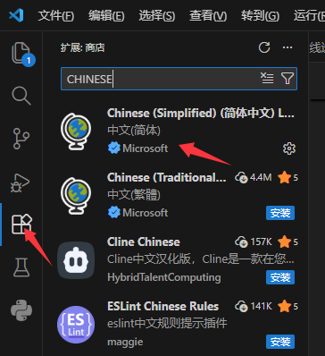
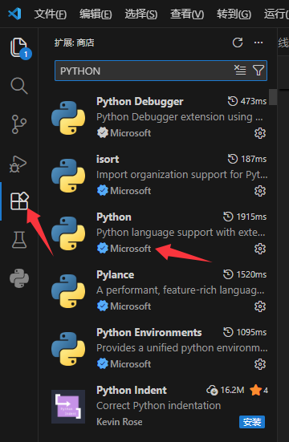
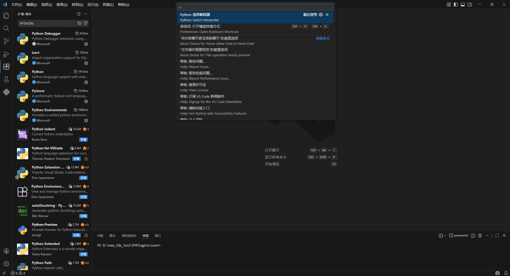
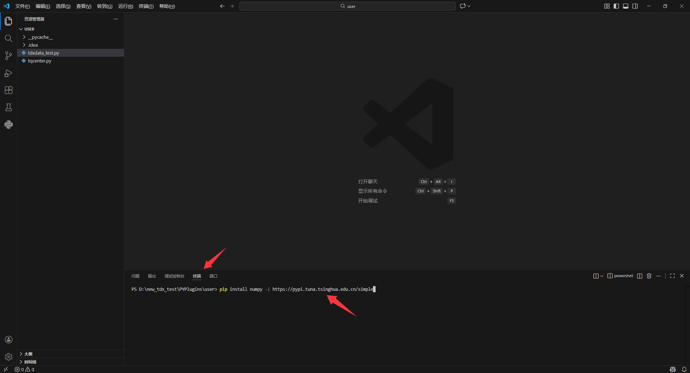
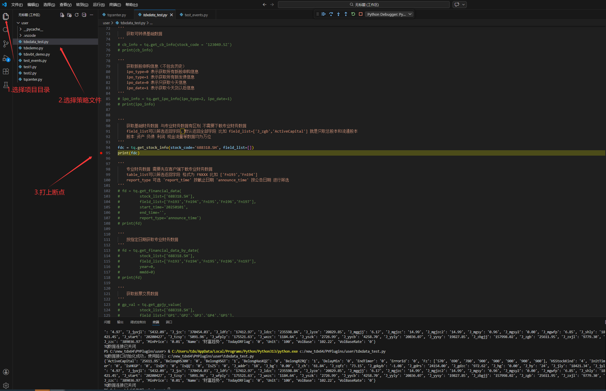
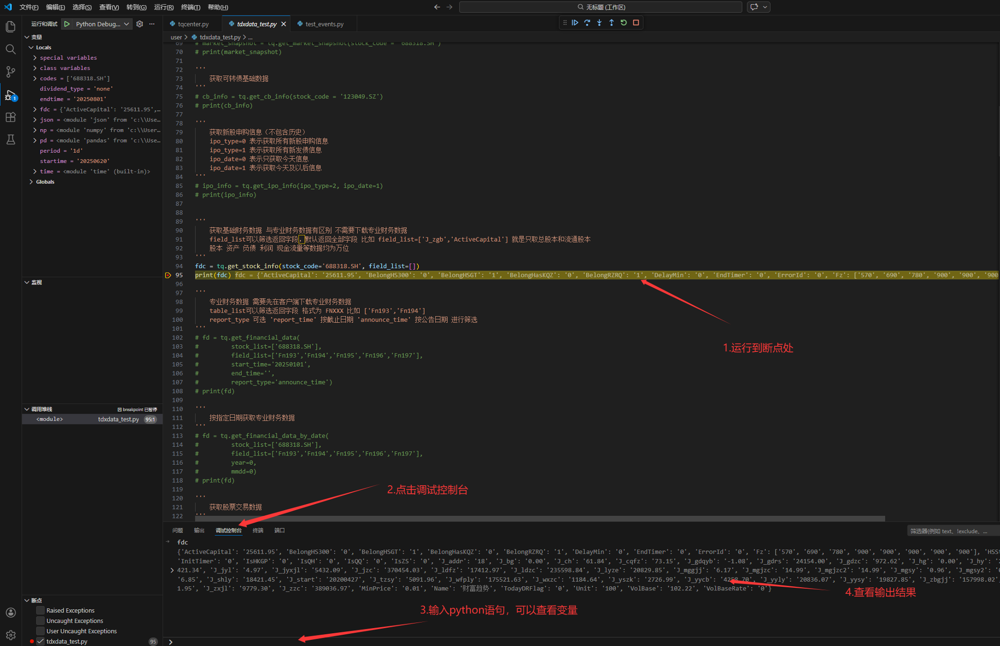

# 安装Python及VSCode等开发环境
# 1.安装 Python 环境
安装Python：建议使用Python3.7及以上版本
# 1.1 下载地址：Python官网 (opens new window)
特别提示：安装时候务必勾选Add Python to PATH（将Python添加到环境变量）
# 2.安装IDE 建议VSCode、PyCharm或Trae
# 2.1 下载地址：Visual Studio Code官网 (opens new window)
# 2.2 安装 Python 插件（Extensions）
VSCode安装好后，在VSCode终端-扩展-输入下文，分别添加相关扩展：
简体中文
python


# 2.3 选择Python解释器：选择python3.13安装路径的exe
使用 Ctrl+Shift+P 快捷键打开 command palette 窗口
输入关键字
python select并找到Python: Select Interpreter一项， 点击该项并在随后弹出的 Python 解释器列表中选择目标解释器：

# 2.4 在VSCode终端-扩展-分别输入下文，常用库建议安装：
- pip install numpy -i https://pypi.tuna.tsinghua.edu.cn/simple
- pip install pandas -i https://pypi.tuna.tsinghua.edu.cn/simple
- pip install backtrader -i https://pypi.tuna.tsinghua.edu.cn/simple
- pip install vectorbt -i https://pypi.tuna.tsinghua.edu.cn/simple

- 在 VSCode 中打开要调试的文件（如 tdxdemo.py）
- 在代码行号左侧单击，出现红点即表示断点已设置。
- 选择调试配置：点击左侧活动栏的“运行和调试”图标（或按 Ctrl+Shift+D),选择并启动调试配置（调试器类型选择 “Python Debugger” ）
- 自动生成配置：完成以上步骤后，VSCode会自动在项目根目录创建一个 .vscode 文件夹，并在里面生成 launch.json 文件.同时，调试下拉菜单就会出现，默认选中了“Python 文件”这个配置。
- 启动调试：按 F5 或点击绿色的“开始调试”按钮。

- 显示选择调试配置-“ Python文件 ”，调试打开的 Python 文件。
- 可以查看变量等等。

# 3.用户py的文件位置
在策略管理器界面，点击[文件位置]。
用户的py文件一般在客户端PYPlugins下面的user目录下面。py运行过程的生成的文件一般在PYPlugins下面的data和file目录下。
← 版本更新说明 安装通达信终端并获取数据 →